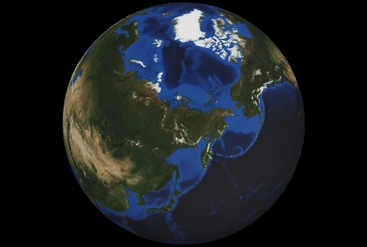
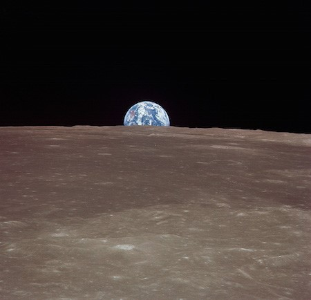
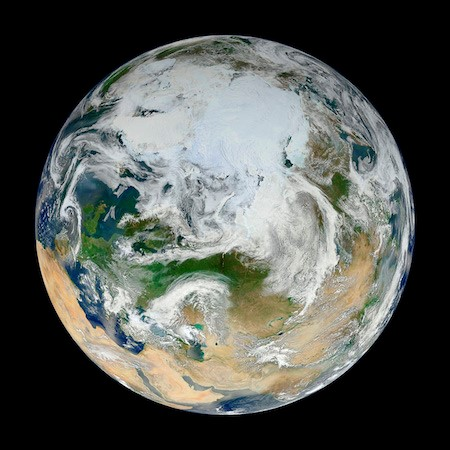

DÜNYA
Dünyamız katı bir kabuk, aktif volkanlar, dağlar, vadiler, kanyonlar, ovalar ve daha birçok yer
şeklini içeren bir yüzeye sahiptir. Dünya, okyanus gezegeni olmasından dolayı özeldir. Yüzeyinin
yaklaşık %70’ini okyanuslar ve denizler oluşturur.

Atmosferimiz çoğunlukla nitrojenden oluşur ve nefes alabilmemiz için bolca oksijen içerir. Ayrıca
atmosferimiz bizi meteoritlerden korur, atmosferimize giren meteorlar parçalanarak yer yüzüne
ulaşırlar.
İçinde yaşadığımız gezegen olmasına rağmen Dünya hakkında hala bilmediğimiz birçok şey vardır.
O yüzden yörüngemizde onlarca uydu Dünya’nın fotoğraflarını çekip, çeşitli ölçümler almaktadır.
Bu uydular sayesinde hava durumu, okyanuslar, toprak ve küresel ısınma hakkında daha çok bilgi
edinebiliyoruz.

Dünya'nın 1969'da astronotlar tarafından çekilmiş fotoğrafı (Kaynak:NASA)

Dünyanın Kuzey Kutbunun görünümü (Kaynak: NASA)
Kaynak: NASA